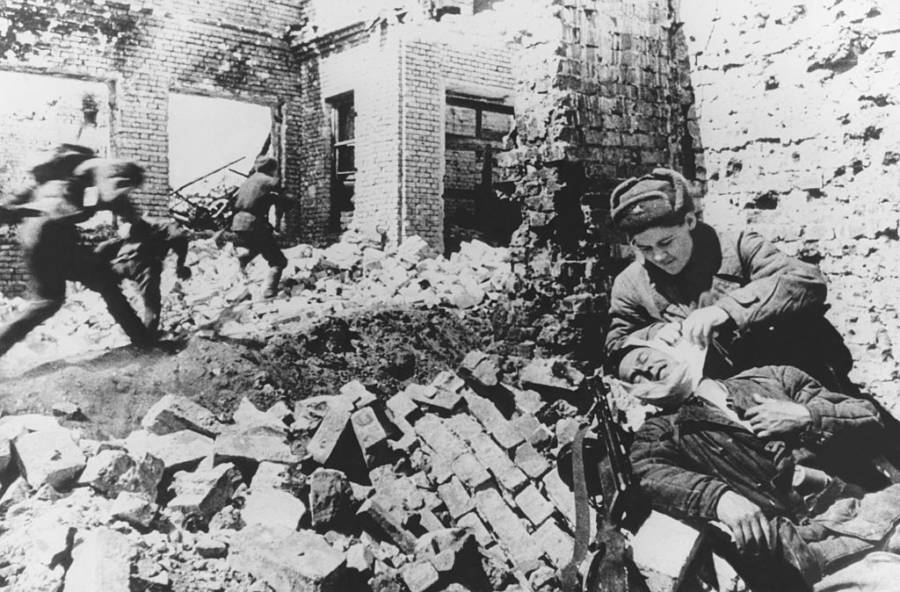

The Battle of Stalingrad
The Battle of Stalingrad, fought from August 23, 1942, to February 2, 1943, during World War II, was a pivotal confrontation between Nazi Germany and the Soviet Union. It marked a turning point in the war on the Eastern Front. The battle took place in and around the city of Stalingrad (now Volgograd) in southern Russia.
The battle began with a massive German offensive aimed at capturing Stalingrad, a key industrial city and transportation hub on the Volga River. German forces, led by Field Marshal Friedrich Paulus, launched a relentless assault, employing both infantry and aerial bombardment to seize control of the city. However, the Soviets, under the leadership of General Georgy Zhukov, mounted a fierce defense, utilizing urban warfare tactics and deploying reinforcements from across the Soviet Union.
The battle devolved into brutal street-to-street fighting, with both sides suffering heavy casualties. The harsh winter conditions further exacerbated the already dire situation for both German and Soviet troops. Despite initial gains by the Germans, the Soviets managed to encircle the German Sixth Army and parts of the Fourth Panzer Army in a massive pincer movement, trapping them within the city.
The encirclement of German forces at Stalingrad proved to be a decisive turning point in the war. Cut off from supplies and reinforcements, the German Sixth Army ultimately surrendered on February 2, 1943, marking the first major defeat for Nazi Germany in the war. The Battle of Stalingrad resulted in staggering losses on both sides, with estimates of over 2 million casualties. The Soviet victory at Stalingrad not only halted the German advance into the Soviet Union but also set the stage for the eventual Soviet counteroffensive that would push the Germans back to Berlin, ultimately leading to the end of the war in Europe.
Battle Location
| Axis Powers | Soviet Union | |
|---|---|---|
| Leader | Adolf Hitler | Joseph Stalin |
| Strength | 1 million+ | 1.1 million+ |
| Casualties/losses | 1.5 million+ | 2.5 million+ |
| Victorious? | No | Yes |